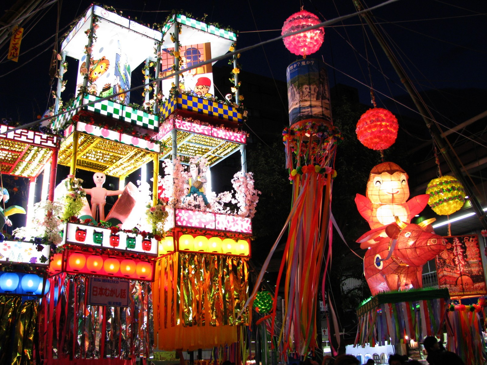
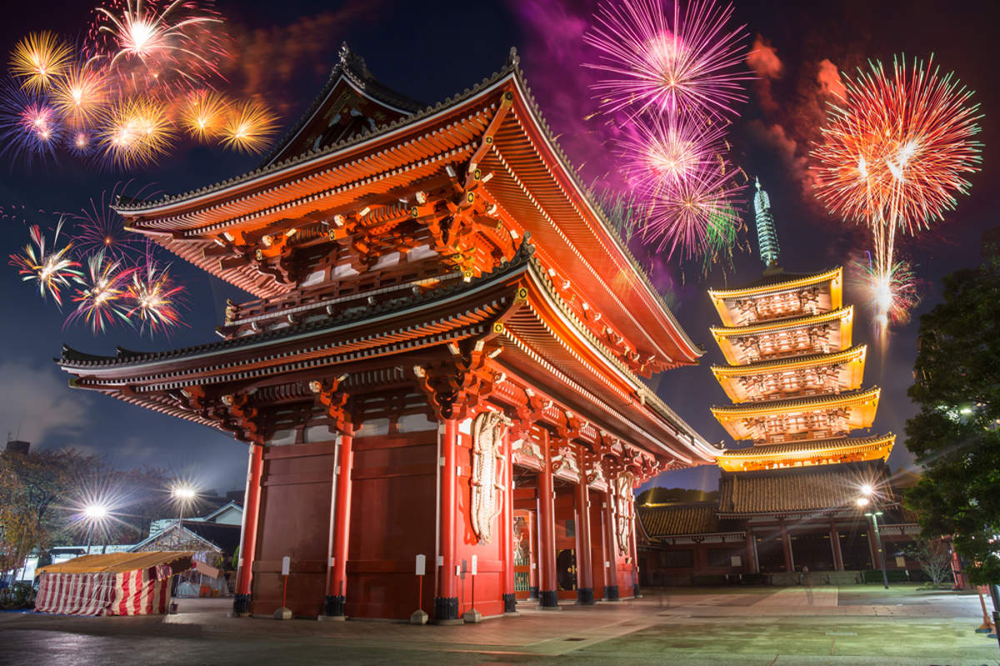
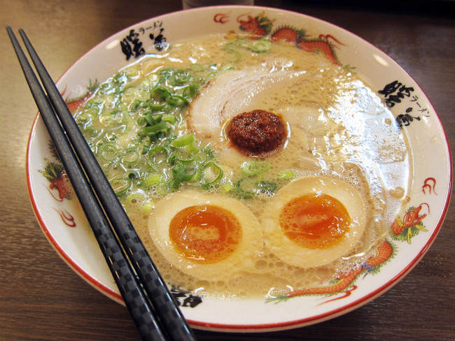
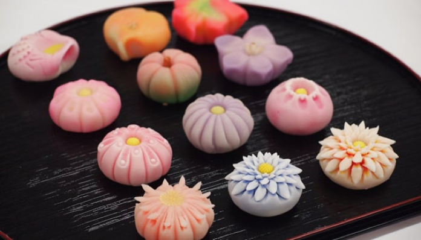
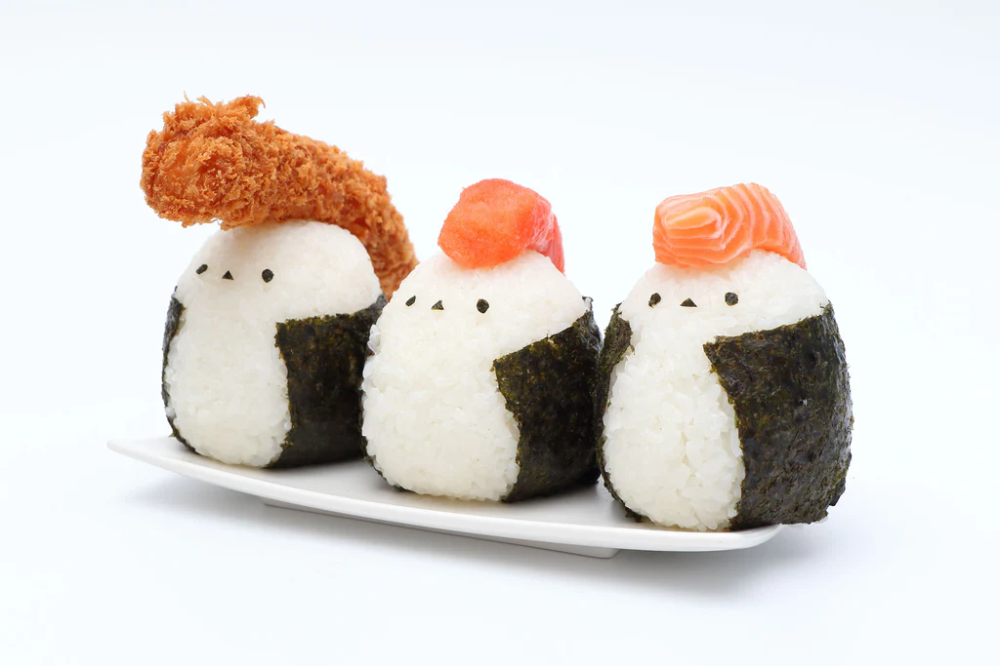

日本的思考
人生を導く哲学
日本文化には独自の哲学的語彙がある——正確な翻訳を持たない言葉たち。それらは感じ方、生き方、世界との関わり方を定義し、他の言語には存在しない。それらは抽象的な概念ではなく、社会、芸術、そして最終的にはアニメを形作る日常の実践である。[1]
これらの概念の多くは禅仏教や神道に起源を持つが、進化を遂げて日本の集合的無意識の一部となり、建築からお茶の出し方に至るまで浸透している。
生き甲斐は各人の存在理由を中心に据える。[2]
Wabi-Sabi
侘び寂び不完全さ、未完成さ、儚さの中に美を見出すこと。金で修復された割れた茶碗は、無傷のものより美しい——その傷跡が物語を物語る。侘び寂びの美学は、建築、禅庭園、日本の視覚芸術に浸透している。[3]
アニメにおいて：ジブリの風景のもの悲しさ、完全には解決されずに成長する不完全なキャラクターたち。
Mono no Aware
物の哀れ — 「物事への共感」すべてが儚いという甘苦い意識。平安時代に生まれ、18世紀に本居宣長によって再び取り上げられた。数日で散ると知りながら桜を愛でることは、物の哀れの最も純粋な体験である。[4]
アニメにおいて：『CLANNAD』の結末、『ヴァイオレット・エヴァーガーデン』の回想、『フルーツバスケット』第一話の花見。
Kaizen
改善 — 「継続的改善」絶え間ない小さな改善の哲学。大きな革命ではなく、毎日の微小な変化が蓄積されて、驚くべき変革を生み出す。トヨタ、ソニー、ウォルト・ディズニー・カンパニーはその適用の世界的な例である。[5]
アニメにおいて：悟空、ロック・リー、緑谷出久の修行——克服は決して飛躍ではなく、常にプロセスである。
Gaman
我慢 — 「耐え忍ぶ」耐え難きを忍耐強く、外に不平を漏らさずに耐える能力。禅仏教に結びつき、我慢は日本のストイシズムである：痛みを否定するのではなく、平静を失わずに黙って乗り越えること。[1]
アニメにおいて：『カウボーイビバップ』のスパイク、『NARUTO』のうちはイタチ、悲劇に直面する『ヴィンランド・サガ』の登場人物たち。
Kintsukuroi
金繕い — 「金で修復する」金、銀、または白金の漆で割れた陶器を修復する芸術。修復された器はその割れ目を隠さない——むしろ称賛する。強力なメタファー：割れ目は物体（または人）の歴史の一部であり、それをより価値あるものにする。[1]
アニメにおいて：トラウマを消さずに成長するキャラクター——大崎ナナ、桐山零、金木研。
鳥居は俗界と聖域の境界を示す。
世界観
強制されない信仰：宗教的シンクレティズム
日本は宗教と独特の関係を持つ。大多数の日本人は特定の信仰を信心しているとは宣言しないが、それでも宗教は日常生活のあらゆる場面に存在する。この現象はシンクレティズム（習合）と呼ばれる：矛盾なく複数の信仰体系が調和して共存すること。[6]
同じ家族が、正月は神社で祝い、結婚式は神道またはキリスト教で行い、葬式は仏教で行う——何の矛盾も感じずに——ことは珍しくない。
神道（神道、「神の道」）は日本の先住宗教であり、仏教伝来以前から存在する唯一の宗教である。多神教であり、自然のあらゆる要素——山、木、川、風——に宿る神を崇拝する。その柱は、儀式的浄化、自然への崇敬、家族、そして季節の祭りである。[6]
神社は、神が祀られる聖なる空間である。日本には登録された神社が8万以上あり、コンビニエンスストアの数よりも多い。象徴的な鳥居は常に聖域への入り口を示す。

仏教は6世紀に朝鮮から日本に伝わり、神道と深く融合し、両者は時に一つの信仰と見なされる。日本文化に最も大きな影響を与えた流派は禅仏教（禅）であり、経典の学習よりも直接的な瞑想を重視する。[6]
禅は日本の芸術に直接影響を与えた：茶道、書道、枯山水、能楽、ミニマリスト建築。小さなものの中に無限を見出すという考え方——一杯の茶碗、一筆書き、一つの石——は深く禅的である。

日本の民間伝承はそれ自体が一つの宇宙である：妖怪と呼ばれる数千の超自然的存在が日本神話に登場する。それらは単なる怪物ではなく、複雑な性格を持つ存在であり、時に慈悲深く、時にいたずら好きで、時に恐ろしい。日本の各地域には固有の妖怪がいる。[7]
自然の神、幽霊と呼ばれるさまよう霊、魔法の狐（狐）、いたずら好きな狸（狸）、山の天狗は、日本の想像力をかき立てる存在のほんの一部であり、『夏目友人帳』から『呪術廻戦』、『千と千尋の神隠し』まで、数百のアニメに登場する。

春
Haru
お花見
桜を鑑賞する習慣。家族や友人と桜の木の下でピクニックを楽しみ、人生の無常観（物の哀れ）に思いを馳せます。
こどもの日
子供たちの健やかな成長を祝う日。忍耐、強さ、成功の象徴として「こいのぼり」が掲げられます。
夏
Natsu
七夕
星祭り。天の川で隔てられた織姫と彦星が年に一度会えるという伝説に由来します。願い事を書いた短冊を笹に吊るします。
お盆
先祖の霊を供養する行事。多くの人が帰省し、川に灯籠を流したり、盆踊りを踊ったりして過ごします。
秋
Aki紅葉狩り
秋版のお花見。鮮やかに色づいたモミジを鑑賞します。日本では季節の移ろいを愛でることは重要な文化習慣です。
七五三
3歳、5歳、7歳の子供の成長を祝い、着物を着て神社に参拝する儀式。今後の加護を祈願します。
冬
Fuyu
お正月
日本で最も重要な祝祭。初詣に行き、おせち料理を食べ、年賀状を送り合って新年を祝います。
節分
立春の前日。豆まきをして「鬼」を追い払い、福を呼び込む伝統行事です。
和食
儀式としての食
日本料理（和食）は2013年にユネスコの無形文化遺産に登録された。単なる食べ物ではなく、盛り付け、食材の旬、食べ手への敬意が味と同様に重要な美的・哲学的実践である。[6]
毎食前のいただきますの儀式——農家から自然まで、料理を可能にしたすべてのものへの感謝——は、感謝と相互関連性の日本哲学を凝縮している。
日本は世界のどの国よりも多くのミシュラン星付きレストランを有し、日本食レストランは国外に15万店以上ある。[9]

Ramen
豚骨、鶏ガラ、味噌、醤油などをベースにした麺料理。地域ごとに特徴がある：東京の醤油、北海道の味噌、福岡のとんこつ。『NARUTO』や『食戟のソーマ』などのアニメでも登場。

Sushi
日本の食の大使。おまかせ（料理人に委ねること）はその最高形：料理人と食べ手の相互尊重の体験。

Chanoyu (Tea)
茶道は動く瞑想である：一つ一つの所作に意味がある。緑茶（抹茶）は、禅仏教と侘び寂びの美学をつなぐ糸である。

Wagashi
季節ごとに変わる伝統的な甘味。あんみつ、餅、練り切りは、儚い存在の食用の芸術作品——まさに物の哀れ。

Onigiri
日本の「サンドイッチ」。具材を包んだおにぎりを海苔で巻く。アニメでおなじみ——おにぎりは常に思いやりと家庭の象徴である。
クールジャパン 🌐
文化大使としてのアニメ
アニメは娯楽を提供するだけでなく、何かを伝える。世界中の何世代もの視聴者が、花見、武士道、神道、努力の哲学をアニメを通じて学んできた。
「アニメはその国際化において文化普及の役割を果たし、日本についてもっと学びたいという好奇心と関心を呼び起こす架け橋として機能してきた。」
— ムンダーナ誌、2025年[1]数字で見るクールジャパン
海外の日本食レストラン
（2019年）
年間来場者数
ジャパンエキスポ（フランス）
『ONE PIECE』
累計発行部数

神道と神聖な自然
自然要素に神性が宿るという神道的世界観は、アニメを通じて何百万人もの西洋人の目に触れ、西洋の搾取的な視点とは根本的に異なる自然との関係性への理解を生み出している。[1]
となりのトトロ、千と千尋の神隠し、もののけ姫 — スタジオジブリ
武士道：戦士の掟
武士道の価値観——忠誠、名誉、努力、自己決定——は少年アニメを通じて何百万人もの倫理観に浸透した。師弟関係と自己研鑽はこの侍の伝統と深く結びついている。[1]
NARUTO -ナルト-、鬼滅の刃、るろうに剣心、サムライチャンプルー
文化的窓口としての祭り
祭り、ゴールデンウィーク、夏の花火、七夕、お盆は、アニメが物語に自然に組み込むことで世界中で認識されるようになった。[1]
フルーツバスケット、君の名は。、あの日見た花の名前を僕達はまだ知らない。、とらドラ！
主役としての食
『食戟のソーマ』、『甘々と稲妻』、『異世界居酒屋〜古都アイテールの居酒屋のぶ〜』などのアニメは、日本料理を世界的な憧れの対象とし、それまで知られていなかった市場での和食や茶道への関心を急上昇させた。
食戟のソーマ、甘々と稲妻、異世界居酒屋「のぶ」
社会的価値観：個人より集団
アニメは、日本社会の中心的な価値観である和（調和）を反映する：集団の重要性、集団の福祉のための個人の犠牲、そしてあらゆる決定を形作る社会的義務（義理）の重み。
ハイキュー!!、僕のヒーローアカデミア、最終兵器彼女、ソードアート・オンライン